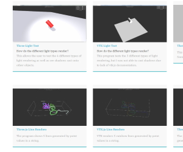

VTK.js VS Three.js
These sample renders were made in order to compare the 3D rendering capabilities of two libraries; VTK.js and Three.js. Tests performed included a simple render test, a performance check, a light/shadow rendering test, and a 3D Line Generator test. I had also prepared flowcharts for how both libraries organize their rendering components.